Chapter 17
XVII “非和声”音
我现在来谈旧和声体系中最薄弱的一环，在此处它突然抛弃了惯常的程序，正如我在第一章所说，是用另一个根本不是体系的体系来打补丁，以便勉强把那些最熟悉的和声事件囊括进来。值得注意的是，这一点迄今尚未有人想到：和声学，其理论，其教学法，所处理的是非和声音！¹ 但非和声的事物在和声学教科书中，正如非医学的事物在医学教科书中一样，是毫无立足之地的。（值得注意的是，德语中并没有使用 medizinfremd 这个词。）凡是属于这种教科书的内容，恰恰因为它不是非医学的，所以才会被收录：如果它是非医学的，便不会出现在那里。“非和声”音这一说法，我只能理解为：若干音被宣布为不适合，或在某些条件下不适合构成和声；这些音由于本质上缺乏构成和声的能力，即缺乏构成和弦（Zusammenklänge）的能力，就被判定为与音乐无关，并因此被逐出艺术及其理论之外。因为和声学的理论与教学法只能处理那些同时鸣响的音所构成的和声（Zusammenklänge），对于非和声的事物则无话可说，或者说至多只能说明它不处理非和声的事物。要么根本不存在所谓的非和声音，要么它们就不是非和声的。
然而，这些所谓的非和声音（如我们所见，至少这个名称是错的）据说只是该体系和弦的偶然²附属品：由它们构成的和声之所以不应被理解为和弦，是因为无法为其找到根音。非和声音的第二特征是，它们产生或多或少不协和的音响，因此需要通过旋律手段加以解决或获得其他辩护。然而，非和声音的根本特征据说在于，它们是偶然出现、意外发生的，仅仅是孤立的现象，出现频率低于其他音响[即被接受为和弦的和声]。
因此，首先[让我们确认]，非和声音确实构成和弦（Zusammenklänge），因而并非非和声的；它们参与创造的音乐现象是和声，正如所有同时鸣响的东西都是和声一样。
然而，据说它们是偶然的和声；也就是说，它们不是必然发生的，不是按照音乐逻辑的规律出现，而是恰恰相反，在最不被该逻辑所期望、所意欲的时候出现——依照该逻辑。因此，它们就好比，比方说，一颗流星或陨星，
[^1]: 'Harmoniefremde Töne'，即“与和声相异之音”；下一句中的 'medizinfremd'：非医学的，与医学相异的。
[^2]: 形容词（或副词）'zufällig' 及其名词 'Zufall' 在本章中反复出现。它们在本文中分别被译为：'casual'、'chance'、'accident(al)'、'incident(al)'。
310 非和声音
它确实存在，但它的存在显然是偶然的，因为我们事先并不知道它出现的时刻，也无法理解[它为何恰恰在]那个时刻出现。
但这种偶然无疑发生得太过频繁，以至于我们无法将其视为真正独立于法则之外。只要一条旋律不完全由它下方和弦中的音构成（这样的旋律相对少见），并且只要它比下方的和声进行得稍快一些，它就必定会持续不断地产生这样的音。而某事若发生得如此频繁，便绝不能归因于偶然；我们更应努力去发现它的规律性，它所遵循的法则。当一片瓦从屋顶落下时，某个特定的人正巧从下面经过，这一事实我们可以当作偶然而不予理会（尽管这也不一定是偶然的，而可能是预先注定的）。然而，我们再也不能将那在决定性时刻正巧经过的人被瓦片击中这一事实当作偶然了；因为如果瓦片落下（也许是偶然的），而下面又正巧有人经过（也许又是偶然的），那么他将被击中就不再是偶然的了，而是完全合乎法则的，没有人会指望事情会是另一番模样。因此，两个偶然事件的共同作用可以产生某种完全可以预见、完全合乎法则的结果。
现在我们还应考虑另一点：瓦片的落下只是——如果真有所谓偶然的话——相对于它所造成的灾祸而言才是偶然的。但就其本身而言并非如此。因为它的落下是两个原因的必然结果：一方面，是那个本应将其固定好的人疏忽大意；另一方面，是万有引力定律。此外，那人从下面经过也并非偶然：他由于某种原因必须走这条路；而且，由于他以某种步速行走，那位此前还远离未来灾祸现场的人，就必定要在那决定性的时刻出现在那里。其中唯一（也许！）带有偶然性的，只是这两种情况的巧合；对此我们尚不知道有什么法则。那么，是否将某事归因于偶然，取决于人们所选取的视角。
也许这里也是如此。也许在这里，我们也应将不可计算的偶然仅仅视为这样一种情况：通过一个声部与持续和声的对置运动，形成了我们无法归类的和弦——可以说，作曲家并未有意为之的和弦，他不指望从中获得任何和声效果；对基础和声没有意义、对和声未来的发展也没有影响的和弦。这可能是事实；但这样一来，他就必定是打算让他的旋律与和声彼此独立，不被人同时听到，尽管他并非那样写下它们的。尽管如此，我们实在不该谈论什么偶然的和声结构。因为，尽管有种种反对意见，它们并非偶然——因为产生它们的两个动因（Ursachen）都各自按照法则运行；因为这两个动因同时运作并非偶然，而是必然的；而且，因为我们不仅能从整体性质中预见这类和声的出现，我们甚至能提前精确计算出它们将会是什么。
然而，我们也许可以谈论非本质的、无关紧要的和声结构。至少就它们显然没有影响而言，它们便是如此。
非和声音
311
对和声进一步发展的影响。诚然，这也不完全正确；因为在一个构造良好的有机体中，例如一件艺术品，任何发生的事物都绝对不对有机体的任何部分产生影响，这是不大可能的。让我们考察最原始的音乐类型——圆舞曲。如果我们可以这样称呼的话，它的和声发展无论如何很难受到这类和声的影响，因为和声方案通常早于产生那些和声的旋律。然而，即使在圆舞曲中，我也发现一些东西，使得将这些和声单独归为一类，往轻了说，是不公平的。首先，任何其他和弦也可能陷入显然对后续没有影响的境地，这在宣叙调中可以看到，那里一个和弦经常被一些不适合它的东西所跟随，那些东西主要通过中间的、无伴奏的歌唱声部才变得可理解。或者，在这个圆舞曲方案本身中，主和弦与属和弦的重复有时后面跟着终止式和弦，有时则不然，那么从任何角度来看，都不能认为后面的终止是由前面的和声产生的。另一方面，如果人们不贸然断定圆舞曲的和声方案确实先于旋律存在，那么就必须承认，这些微小事件加在一起，至少决定了和声变化将要发生的特定时刻。我们当然可以称之为这些和声对乐曲和声进程的影响，即使不是通常意义上的影响。
除了这些偶然和声之外，其他和声也可能显然对后续和声发展没有影响；反之，也尚未证明这些偶然和声真的没有影响。这里还应该强调另一点：这并非它们的本性 alone；它们缺乏影响力并非其本性，正如具有影响力也并非其本性一样。它们的影响仅取决于如何使用它们。我们可以在一种情况下将它们写得看起来与其他任何东西都完全无关，但在另一种情况下又写得似乎一切都从它们生发出来。那么，应该有可能将这些[偶然的]和声用于其他用途。即使有人成功证明了它们现在只是表面上缺乏影响，但由此断定它们必须永远缺乏影响仍然是错误的；相反，更正确的做法是试图找出什么艺术手段使得麻痹它们的影响成为可能。但那种[麻痹]绝不证明它们没有能力与其他的[公认的]和弦一样构成具有重要意义的和弦（Akkorde）。
这一切意味着什么？
首先让我们考察那些不被指定为偶然或无关紧要和声形式的和弦的本质，其合理性和独立处理的可能性得到承认。以下作为第一个特征被普遍接受：和弦是一个复合音（Zusammenklang），由至少三个不同的音组成，因此也是四个、五个、六个等。然而，这个"等等"并不成立；因为理论几乎不承认五个音——甚至九和弦在理论家们心中激起的是"怀疑"，而非他们头脑中的思考。¹ 那么，这里应该
¹ 参见申克，《和声学》，第190页及以后。
312 非和弦音
存在一个界限。它是什么、由谁设定以及为何设定，我们无从得知，尽管我们能从字里行间领会其含义。此外，没有人愿意确切说明那些包含五个以上音的复合体究竟是什么。它们不是和弦，这一点被无条件接受；最多有人会这样说：偶然的和声。这意味着其他的并非偶然。现在我已经指出，这些无关紧要的和声只有在观察肤浅且选取了错误视角的情况下才是偶然的。然而，如果我现在再用另一个例子来说明，即使那些被体系认可的和弦，只要人们不加批判地仅从中看到这一点，也可以被称为偶然的，那又怎样呢？我已经暗示过，它们[也]可以没有影响力。为了证明我的观点，我将不会从较新的作品中选取例子，也不会去求助于基于一两个和弦写下的（印象主义式的）主导动机作为支持，因为它们没有任何和声后果。我也不会去援引较古老的例子，比如说，来自魔笛的'再三重复的和弦'；这些都是真正缺乏影响力的例子，倘若有人希望坚持不精确的表述，也可以称它们为偶然现象。相反，我想谈谈对位法，谈谈复调音乐，关于这两者有人这样说：和弦的形成仅仅是声部进行的偶然结果，它们不具有结构上的意义，因为和声的责任是由旋律线条来承担的。道理就在于此！
这当然只是半真半假，因为这些和弦并非真的没有影响力；它们只是相对地缺乏影响力，正如那些由非和声现象所产生的偶然和声形式一样。
那么，如果偶然的出现或缺乏影响力所表征的并非这些东西的本质，而充其量是它们的处理方式，那么从这个最初的定义中就再也找不出任何能够排斥包含五个以上音的复合音的论据了，除非偶然的并非它们的出现，而是它们的构造。要解释大三和弦的构造，我们可以援引泛音列中的原型。然而，即使我们接受将三和弦观念的反转以及沉音作为小三和弦的解释，当我们想到减三和弦、增三和弦以及七和弦时，所有这些推理便不再适用，而所有这些组合[尽管如此]仍被承认是和弦。这些和弦与那些被[令人满意地]解释的三和弦之间，除了结构上堆叠的三度之外别无共同之处；而仅此一点当然不足以[作为解释]。变音的观念也不是解释，而仅仅是对事实的确认：和弦中的音可以改变——或者更确切地说，被其他音所取代——这当然是一个正确的观察；但是一个统一的、普遍的观念，即便只能肤浅地解释这些功能，也根本不存在。
因此，这样一种和弦在现实中究竟是什么，是极其不清楚的，因为产生连贯性、引发进行的能力，被归因于我们的技术之可能性，而非和弦本身的性质。而最初几个泛音的原型，充其量只能解释大三和弦，别的什么都解释不了。而且我们的和声体系所包含的内容，远不止大三和弦。那么七和弦、九和弦等等，又是什么呢？
显然，这样我们是无法走得更远的。这些既非定义—
非和弦音 313
既无定义，亦无解释。尚无任何一次，和弦的本质曾被以充分的精确性描述过。那么，我们何以知晓什么不是和弦？
我指的是一般性地，以便不留任何疑问。有那么一些复合声音，其与自然的关系既无明确、直接的公式，亦无简单、彻底适用的定律，却被指称为和弦；而绝大多数复合声音，即便出现得同样频繁，却不被如此——这等情形绝不能被视为一种体系。
然而，仍有某些应予提及的方面可借此区分这两类群体；其中有些尚未被透彻考量，另有一个方面虽确实被秘而不宣，却在理论家与美学家的秘密社团中扮演着主导角色。这最后一点便是美，美的界限。我稍后再论及此。其余方面为：（1）历史起源；（2）艺术作品中所见的处理方式；以及（3）一个看似荒唐的方面，但其影响力却比我们愿意承认的更大：音符在纸面上的外观。
历史起源。和弦究竟是通过声部进行而创造的，还是只有在我们认识和弦之后声部进行才成为可能，在此无关紧要；因为——无论何者为先——二者皆源于同一种冲动：将自然素材，即音，与感知器官[耳]以及所有有助于感知的次级与第三级功能（无论是联想的还是生理的）带入恰当的关系。这意味着，既然自然的、无生命的素材不会改变，就要使感知器官适应自然中所予之物，以便对其本质的认识与洞察，在一切可能之处，都臻于完备。两种程序[复调的与和弦的]皆与此冲动一致；二者皆实现同一目的——即便途径不同——即创造对[自然的]素材尽可能真实的摹仿。这些摹仿越是完备，感知能力（直观的与听觉的，或推理的与分析性的）在观察并区分所有特征方面就越是成功。因此，我们看到各个时代的作曲家不断学习新的奥秘，提出对[自然]越来越忠实的再现。每一项创新，每取得的一步，都为更深入的洞察开辟道路。原始的耳朵将音听作不可再分的，而物理学却认识到它是复合的。然而与此同时，音乐家发现它是可延续的，亦即运动潜藏其中。其中隐藏着问题，相互冲突的问题；音是活的，并寻求自我繁衍。他们从中听出了，也从中提取出了八度、五度与三度。
倘若理论家们的意志与才能占了上风，他们到此就会止步！但他们并未止步：他们发现了音阶；诚然，他们尚不懂得如何找到它的基音，但他们做了人若想有所发现就必须做的事：他们对其加以反思，将所发现的东西加以组织（kombinierten）。他们的所作所为使他们走上一切歧途，但或许也引向若干真理；他们做了人们在直觉不再提供帮助时始终应该且必须做的事：他们拄起拐杖行走，戴上眼镜观看，求助于数学与推理（Kombination）。于是，一个奇妙的体系便应运而生；以我们的智性及
314 非和弦音
比起精神力量，它令人惊叹；但与以高等数学运作的自然相比，它不过是儿戏。
在这里，他们确实停了下来。这本不该发生；因为就在不久之前，他们还在正确的轨道上，也就是说，他们正在行进，他们正在运动。自然原型不再孕育出新事物；相反，由近亲繁殖与乱伦所产生的法则，繁衍出那些继承了其父母辈观念之苍白的形式，作为它们脆弱性的标志。直到不久之前，[音乐家们]还走在正轨上，因为他们遵循着材料的律令，模仿着泛音。但后来他们将体系调成了平均律，而体系也缓和了那股焦灼的求索紧迫感。他们缔结了停战。但他们休息（rasten），并非为了重整武装与重新集结（rüsten）；他们休息，是为了生锈（rosten）。平均律体系是一项应急措施，而且是一项巧妙的措施，因为紧急情况严重，而措施充分。这是一种巧妙的简化，但它只是一个权宜之计。长了翅膀的人，谁还愿意坐飞机飞行呢？飞机也是一项巧妙的权宜之计；但如果我们仅凭意志就能飞翔，我们会乐意抛开这机器。我们绝不应忘记，平均律体系只是一场停战，其持续时间不应超出我们乐器的不完善性所要求的限度。我们也不应忘记，我们仍须一再地为实际鸣响的音调作出交代，并且我们永远不会从中得到安宁，也不会从我们自己这里得到安宁——尤其是从我们自己这里，因为我们是探索者，是不安分者，在查明真相之前绝不会疲倦——只要我们尚未解决蕴含在音调中的问题，我们就不会有安宁。我们确实可能始终被阻挡在这一目标的实际达成之外。但更确定无疑的是，在达成之前我们不会有安宁；探索的精神不会停止追寻这些问题，直到它解决了它们——以任何人都尽可能接近实际解决的方式解决它们。因此，我认为，与那些以他人的成就为傲而怠惰、并将我们的体系视为终极的、定型的音乐体系的人的观点相反——与那种观点相反，我认为我们才仅仅站在开端。我们必须前进！
那么，历史演变在经过一段时间后，对于解释这些现象的实际意义就几乎没有什么帮助了。具体来说，即从那个它部分地忽视自然原型、用人工的、平均律的音调取代真实音调的时刻起。从那个它以宣称泛音为非音乐的为由将自然从艺术中驱逐出去，并告诉那位以准确音准唱出一个[自然的]大三度的合唱歌手说他的音准在音乐上是错误的时刻起。当然，就在同一时刻，所有构成我们现行体系的和弦确实都变得可能了。然而，正如我先前所表明的，这些和弦也内在地携带着终将推翻这一体系的东西。这一点实际上在讨论减七和弦时已经提及。但历史演变，即使在其早期阶段，也无法给出真正明确的解释；因为即便在这些早期阶段，它也并未呈现一条不间断的脉络。有时它通过声部进行抵达和弦；有时它又让声部在和弦之上演变。倘若我们足够短视——而我们确实如此——总是只把当下的结果视为目标，时而认为和弦、时而认为旋律是动力 that
非和声音 315
产生音乐运动，那么感知和理解整体的可能性便消失了。而未能看到两者只服务于一个目的，即深入自然所赋予的东西，我们时而将前者，时而将后者视为音乐的本质；然而事实上，这一本质甚至不是第三种[可能性]，而是某种无法在此详加考察的第四种[可能性]。¹
因此，如果说那些被称为偶然和声的复合音响的历史演变仅仅展示了作曲家最初使用此类音响的方式，那么有以下四个理由说明它并不能支持这些和声是偶然的这一结论：
-
历史演变与它本可能经历的自然演变不同。按照自然演变，将会存在与自然法则相应的结构。
-
然而，历史演变毕竟还是在某种程度上遵循了自然的意志，即使走的是曲折的弯路；因为我们的精神（Geist）不可能创造出与自然完全不同的事物。如果我们假定自然有其法则，那么即便是这种人类创造也不可能是偶然的，而必须符合法则。
-
历史演变毕竟只说明了这些和声以什么顺序、经由什么路径闯入音乐，却并未说明它们与我们活动的主要目的之间的关系。因此，尽管这些和声诚然可能是作为偶然的和声结构而出现的，但它们同样可以是正当且基础的，就像其他我们已经认识到其基本特性的和声一样。
-
事实上，我们体系中的所有其他和弦也是以类似于这些和声出现的方式产生的。也就是说，那些和弦起初同样是谨慎地、尽可能不引人注目地少量使用；但一旦耳朵熟悉了它们，它们就变成了每一个和声作品中的日常、自明的事件。它们从通常出现的语境中解放出来，被用作独立的和弦，正如我已用减三和弦和七和弦所展示的那样。
至此，我们已经触及了上面提到的、用以将这些无影响力的和声与其他和声区别开来的第二个方面：艺术作品中可观察到的处理方式。然而，除了前面已经得出的结论之外，我们不可能从这一点上再得出任何别的结论，因为在处理方式中，我们发现的更多是事物如何产生，而非它意味着什么。如果艺术家们总是有勇气回归本源，那倒不必如此。但事实就是如此。既然事实如此，人们必须也完全可以公正地、并对那些走过这条道路的伟大心灵怀有充分敬意地理解这一点。[可以理解这一点，]通过认识到他们的工作恰如他们所做的那样是必然的，而且，正如我所说，²艺术实际上是一种第四[维度]，这些伟大的人物始终将它赋予[我们]，即使当
¹ 也就是说，音乐的本质不是(1)和弦，不是(2)对位，也不是(3)和弦与对位的结合，而是(4)某种不同的东西。 ² 参见前一条脚注及相应正文。
316 非和弦音
就材料而言，它们在服务于自然的最终目的方面是不足的。
音乐中这些偶然和声的处理方式与公认和弦的区别如下：公认和弦要么是协和的，要么是不协和的。作为协和和弦，它们是完全自由的，最多只服从于根音进行的必要性。作为不协和和弦，它们理应被预备和解决；但不协和音程的发展特征在于，这两个条件越来越被忽视。然而，倘若我们假定解决仍然是一种实际要求，而不解决仅仅是表面现象或仅仅是一种风格上的刺激性处理，并以解决作为规范，那么以下区别事实上便成立：不协和和弦得到解决，也就是说，它们之后会出现一个新的和弦，这个和弦补足了它们的不协和性质以及根音的倾向；但这些偶然和声结构在解决时却显露出某种不同。例如，一个音 d 作为延留音或经过音出现在和弦 c–e–g 之上，它得到了解决；但其下方的和弦 c–e–g 却保持不动，没有变化。此时，音响 c–e–g 看起来才是真正重要的东西，是恒定不变的，而音 d 看起来则实际上是一个非本质的、偶然的、可变的附加物。即使在全部和声学中都找不到平行的案例，[这种独特性] 也未必能证明 c–e–g–d 不是一个和弦。我认为那种[处理方式]只是反映了这种复合音响的历史起源，仅证明那是它最早出现的样子以及最初被处理的方式。而且我已经多次指出，一旦这种个别情况变得普遍和熟悉，处理方式就会随之改变。此外，我只要想到那条规则：在延留音得到解决的同时，和声也可以改变，从而使一个新的和弦接住了解决的音（例244，第334页）——我只要想到这个例子，就会明白上述情况甚至不一定就是非和弦音处理方式的特征。
然而，确实存在平行案例。 例如，当七和弦 d–f–a–c 通过 c 的下行解决到 d–f–a–b 时。如果有人反对说 d–f–a–b 也是一个七和弦，那么可以这样来思考：d–f–c（省略五音的七和弦，这种情况确实存在！）解决到 d–f–bb。这里的下方和声并没有改变。但是，有人会说，根音变了，而延留音的情况并非如此。首先，让我们再次提醒自己，这只不过必须是处理方式上的一种区别，它对和声意义并无约束力。然而，接着我要问：如何证明在延留音解决时根音就没有改变呢？我们常常看到，旧的理论为了解释更简单的情况而假定一个更低的、默示的根音，并且我们接受了这种解释，因为如果我们想要保留[根音]体系，这种解释确实是必要的。也许在这里，我们也应该假定一个有进行的默示根音。如果我们在别的时候相信存在这样的根音，那么在这里也可以这样做。我们无法在此确定这样一个根音，可能有很多原因。其中首要的，也许是还没有人尝试过。但是，如果我来尝试它，如果我给这个结构 c–e–g–d 指定一个根音，例如 A 或 F，那么就会产生声部进行
非和弦音 317
这对我们一定是新鲜的，新鲜是因为我们尚未尝试过这样的诠释；[我们无法确定根音，]也就是说，因为我们对根音的概念可能过于狭窄，而这种情况与这一概念的其他对象又太过缺乏相似性。但相似性真的如此微小吗？难道不存在一些无可争议的根音进行，与那些我们不愿在此处承认的进行极为相似吗？

难道示例230a和b看起来不与230c和d非常相似吗？然而在此处我们确实看到了根音！而且这（230a和b）确实是和弦！不是延留音！
我认为没有必要再进一步讨论下去，尽管关于这个主题还有许多话可说。只需理解，第一种处理方式只意味着过去是那样做的。然而，与此同时，每个人都必须清楚，正因为这个原因，以后将会以不同的方式来做。前者是预备工作，只有凭藉它，真正的成就——即后续的处理——才成为可能。
现在，这些无影响力的和声还有一个显著特征，讨论它看似像个笑话，但遗憾的是并非如此。也就是说，我主张，三和弦体系之所以被扩展为四音和五音和弦，仅仅是因为而且只是在叠加三度的图像允许扩展、允许在三度之上再添加三度的地方。那么实际上，[这种扩展的产生]源于声音的图形表示，源于视觉印象：点，空隙，点，空隙，点，空隙……只有那些可以追溯至这一图像[记谱法]的声音才被纳入体系之中；因为显然，七和弦是一种比诸如c–e–g–d这样的和弦更为复杂的音组合，这一点我稍后还会说明 [p. 320]。尽管如此，七和弦是和弦，而c–e–g–d却不是！必须承认，一位音乐家可能在发现c–e–g–d这个音响之前，尤其是在图形图像的提示下，就先发现了七和弦，尽管后者对他来说理应更为显而易见；因为一个人所想到的观念顺序，未必取决于它们与原型相关的程度。然而，七和弦被更早地感知到，这一点绝不确定。它只是比另一种更早地被体系所采纳。这若不是可耻的，也仍然可笑。
我相信现在已经证明，这些组合并不比体系中的和弦更偶然，也不一定更缺乏影响力；无论是历史演变，还是文献中可见的处理方式，都并不决定它们的和声意义。我也已证明，它们
318 非和声音
如果它们是非和声的，就不属于和声学的研究范围，而现在我可以肯定地得出结论：
不存在非和声音，因为和声意味着同时发声的音（Zusammenklang）。 非和声音只不过是理论家们无法纳入其和声体系的那些音。而[他们之所以]无法纳入，源于理论家们武断的假设，即耳朵只能注意到前五个泛音。
例如，海因里希·申克，一流的头脑，一个有洞察力与想象力的人。我没有读过他的书；¹ 我只是浏览过。然而，除了这种真诚的求知与理解的探索——一种因其非凡天赋与学识而更加卓越的追求——之外，我发现其中通篇都是错误，尽管是有趣的错误。²
他错误的根源，在于学究式史学家那种心照不宣却根本的假设——音乐的“黄金时代”已经过去——这使申克陷入对现代艺术家进行不合身份的激烈论战。过去这样那样的东西是好的，而且他往往能漂亮地论证这一点；但对他而言，由此便推出这样那样的新东西就是坏的，他也懒得去追问这新东西在原则上是否与旧东西相似。然而，他评判那些尚未成熟但正在成熟的苹果，就像一个只认得完全熟透的苹果的人那样：黄金时代已经过去了！无论他的功绩多么伟大，在那些他试图积极划定清晰界限的地方，他显得特别无力。正是在这些地方，他变得含糊不清，比如当他谈到“神秘的数字五”³时，他说我们不应逾越此数（若我记忆无误）。诚然，这是一个诗意的想法，但在坏的意义上却有点过于诗意了，因为真正的诗人是认识真理的；因为那数字五早已被抛在我们身后了。但这一事实并不困扰他。他想要数字五保持神秘。秉持这一目标，他不仅对现实视而不见，还放过那些虚假和不精确的观察；否则这种“神秘性”就无法维持。当然，数字五就其本身而言，并不比所有其他数字更神秘，也不比其他数字更不神秘。而且说到底，我们所揭示的这类秘密，要么根本不是秘密，要么就是我们尚未揭示它们。自然想对我们隐藏的东西，她隐藏得比这更好。然而抛开这一切：数字五被认为不同寻常，是因为它作为一种界限在音乐中处处出现，例如（我不记得所有细节），作为第五个泛音，作为音阶的第五个音，作为五度。是的，但谁说五度与五有任何关系呢。就因为我们给了它五度这个名字？它其实并不因此就是五。例如在泛音列中，它是第二个音。在三和弦中，它是第三个音，而在半音音阶中它排在第七位。我们把 c – g 这一音程命名为五，并不意味着 c – g 在每个语境中实际上就是五；我们的用法源于这样一个事实：在我们现行的音阶中——我们的音阶——c 和 g 之间恰好有三个音。但如果有四个或两个呢？而且本来也可能有
¹ 前揭，第 95 页及第 119 页，脚注。
² 在接下来的几句话中（“错误的根源……含糊不清”），勋伯格详细阐述了第一版（第 356 页）中仅为一则简短插评的内容。在那里他曾写道，申克对现代艺术家“过度且不公”的论战曾深深伤害了他（勋伯格）。
³ Schenker, Harmony, pp. vii–viii; 25f., et passim.
非和弦音 319
如此，而且这也曾是对的；因为自然可供阐释的多样性，远远超过我们的秘密。
每当人们仅仅寻找足够的理由来解释已知的事物，而不是提供充足的理由去包容尚不存在的情况时，就会产生这样的错误。每当人们将已知的现象视为唯一的存在，视为自然的终极且不可改变的显现，并且只解释这些，而不是从自然与我们的情感和感知之关系出发去全面地思考自然时，就会产生这样的错误。如果采取后一种观点，这些现象将会表明它们并非结论性的、并非最终的、并非确定性的；相反，它们只是一座巨大而不可估量的整体中的一小部分，在这个整体中，数字五与其他所有数字——不论是质数、乘积还是幂——同样有趣，但并不比其他数字更神秘。¹ 而它们的秘密并非因其宏大而对我们隐藏；它们的秘密、它们的神秘性倒不如在于，我们不知道是否有、为何有、以及哪些现象以它们为基础。诚然，我们可以猜测，但我们并不知道。然而不应忽视的是，这些神秘对于无知者来说只是烦人的东西，唯一有资格承担起其可怕重负的，是那些有幸获得解决它们之思路的人，而且神秘本身并不比电影中那些娱乐性的东西包含更多的真理。
一旦人们发现了这样的原理，就不存在非和弦音了。因为自然的原型，音，可以用来解释，作为和弦，其他一些完全不同于这些简单组合的和声组合。我们面对这一原型的关系，是分析者、探索者的关系；在模仿它的过程中，我们发现其真理的多寡。创造性的精神追求更多，越来越多；而那些仅仅寻求享乐的人则满足于较少。艺术的战斗就在这多与少之间展开。这边是真理、探索——那边是美学、是看似已被发现的东西，是将值得追求之物削减为触手可及之物。值得追求的是去发现自然音中所蕴含的一切，从而由此获得人脑凭借其联想能力和系统化能力所能达成的一切。触手可及之物有其暂时的界限，无论我们的本性还是我们所发明的乐器，都有其暂时的界限。就音本身而言，我们之外的现象中可达到的东西，理论上讲，是没有边界的。尚未达到的东西才是值得追求的。已经达到的，是一个能够相当精确地容纳某些泛音、而对另一些泛音则容纳得相当不精确的系统。已经达到的，是创造性的音乐家凭借其无意识的耳朵、凭借其直觉，对这一系统的几乎所有可能性进行的近乎穷尽的组合。仍然完全缺失的，是对已经达到的东西和尚须追求的东西之间关系的正确识别。我们还必须追求所有剩余之物：对所有泛音的精确容纳，与
[¹ 勋伯格在修订版中添加了以下评论（直至该段落末尾）。]
320 非和声音
根基，最终形成一个新体系，对由此产生的关系进行全面综合，发明能够将那种音乐化为现实的乐器，……如此等等。
不仅偶然和弦，就连基础和弦之所以被发现，也是因为自然原型通过允许这些发现而将它们唤起。主要的协和音是对原型的直接模仿，其他的协和音则是间接模仿。后者与前者都包含在泛音列中，作为与基音或多或少相近的泛音。不协和音对应着遥远的泛音，它们同样部分地是对自然的直接模仿（即使是不精确的，如同平均律体系），部分是间接的或推断出来的。发响的音证明了精确与不精确的模仿。它允许近似，正如平均律体系实际所展示的那样。这个体系是一个近似的体系：一个不完备事物的完整体系。不协和音总是被谨慎地引入：预备、解决、经过[音]、Manieren（装饰音），¹ 等等。装饰音只是最终自由使用的预备阶段。受限制的使用是第一步手段，自由使用是下一个目标。然后，继续前进！因为我们才刚刚开始。即便到了现在，我们仍然不将所有的装饰音记谱。显然我们仍未察觉到某些装饰音正在为音乐的未来形态做准备，而且我们也不知道它们可能是什么。但是，正如终于有人敢于记谱七和弦一样，也会有人敢于将这些装饰音[在记谱中]固定下来。然后，继续前进！正如终于有人自由地使用七和弦，甚至在没有装饰音引入的地方也写下它，将它纳入体系，移植到其他音级上，改变它，从这些构成的音级中形成新的和弦，因此这里也一样，总有一天会有人将其体系化，建立近似值，然后将它们视为确定的东西。
但我们还没有发展到那么远。我们[在此]完全不必走那么远。我们唯一关心的是，个别和弦——甚至有些已被允许使用的和弦——是否属于这个体系。我说它们属于它，尽管这个体系对它们来说太狭窄了，尽管这个体系设立了本不应有的限制。例如，如果我们在钢琴的低音区弹奏一个C大三和弦，以下更为切近的泛音就构成了该音响的一部分：C的泛音 c–e–g，G的泛音 g–b–d，E的泛音 e–g♯–b；因此，总共是 b、c、e、d、g、g♯。而这些还只是更为切近的泛音！然而，在 c–e–g 和弦中的 d 却被认为是非和声的、对该音响而言是外来的；也就是说，如果发出 d 音，那便是一种特例，并非日常常态。如果我们对 d 所做的与对 e 和 g 所做的一样，[结果] 就不像 c–e–g 那样是一个和声；相反，d 是非和声的，于是我们就得到了一个偶然的和声结构。也就是说，如果我们让这个 d 被唱出来，这个反正作为泛音而响着的 d，以我们将 e 和 g 定为实际要唱的音的同样方式去论证它 – 这些音确实也只是因为它们‘反正响着’而被实现的 – 如果我们确实也让一个实际的声部也唱出这个 d，那么 [结果] 就被说成是一种偶然的和声结构，而前者 [c–e–g] 则是一个和弦，尽管它们之间并无区别。当然。很难
[¹ 见前，第47页。]
非和声音 321
d 要在该体系中谋得一席之地，因为即使是最先进的理论家也坚持认为，九和弦——如果真有这种东西的话——是无法转位的。是的，尽管九和弦本身就证明了 c–e–g–d 这一和声与自然是多么精确地吻合。此外，这个 c–e–g–d 表明九和弦比七和弦更为直接。因为 C 上的七和弦不得不使用 G 的第四泛音或 C 的第六泛音，然而后者是音不准的。而且，由于在实际鸣响的和弦中，G 与 C 几乎享有同等权利，所以 G 那更纯净的第四泛音要比 C 那音不准的第六泛音更为直接。但是 G 的第二泛音，即 d，又比其第四泛音 b 更为直接。因此，如果 G 的第四泛音有时可以被优先于 C 的第六泛音（这种情况确实发生在七和弦 c–e–g–b 中，作为“被认可的”和弦，它可以援引自然为先例），那么 G 的第二泛音肯定比第四泛音更有依据。c–e–g–d 这个和弦肯定比 c–e–g–b（或 bb）更为直接。但那么我们要拿 g# 怎么办呢？它如何在该体系中立足？仿佛这个体系只能凭三度来构建似的！为什么不凭五度呢，五度确实比三度更为直接？为什么一开始就要“向上”构建呢？也许声音也有三个维度，也许甚至更多！好吧！构建吧，但别以为我会把你的体系看得比它本身更高明：它不过是一个呈现事件的体系，而不是解释它们的体系。一个收旧货的人，买进了许多零零碎碎的旧物，在挑拣和整理较好的东西时，顺带带来了某种秩序。而那些他无法再分类的垃圾，他就堆成一堆，对顾客说：“我这儿有些东西还不错；那边还有一些我真不知道该怎么处理。你挑挑能用的吧。”现在，这个收旧货的人做生意的方式，正和这些“向上构建”的理论家行事的方式一模一样。因为正是在那堆他确实不知道该怎么处理的垃圾中——那些他认为不如自己旧裤子和补丁夹克的废物里——往往才能发现古老的艺术品、贵重的画作、罕见的小提琴之类的东西。“我不知道该怎么处理它”——这并不困扰我。你只要承认这一点就行了！那样我就满足了，你可以继续构建你的体系。但这个体系是错误的，或者至少是不充分的，因为它无法容纳确实存在的现象，或者把它们贴上垃圾、例外、偶然的和声结构、废弃之堆的标签——这话必须说出来。然而这个体系还妄自尊大地自诩为自然体系，可它几乎连一个呈现体系都算不上。承认吧：“因为我不知道该怎么处理它！”那样我们就能成为好朋友。但这种装腔作势必须停止。
因此，既不存在非和声音，也不存在与和声相异的音，只存在与和声体系相异的音。经过音、换音、留音等等，与七度和九度一样，不过是试图将某种听起来与更遥远的泛音相似的东西，纳入音同时鸣响的可能性之中——这些按定义当然就是和声——而已。任何为它们的使用制定规则的人，充其量只是在描述它们最普遍的用法。然而，他无权声称自己据此就精确地区分了那些可能性，在这些可能性中它们
322 非和声音
听起来好听的与听起来不好听的之间并不存在这样的可能性。不存在它们[必然]听起来不好听的可能性。证明：全部音乐文献。音一起响的可能性、和声的可能性是没有限制的；[限制]最多在于将和声纳入一个能确立其审美价值的体系的可能性。目前，即使这一点最终也可能达到[即一个涵盖所有现象的体系，确立每一个现象的价值]。
现在举一个例子。在一个持续和声c–e–g的背景下，两个声部以反向进行演奏C大调音阶。
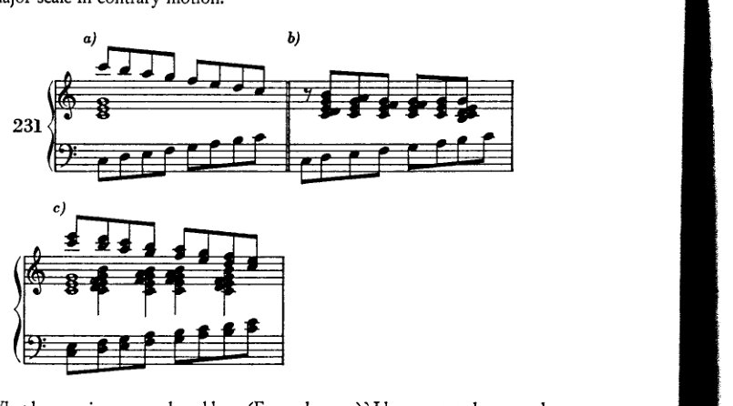
这里产生了什么和声（示例231a）？我将特别明显的各个分组单独记谱（231b）。或者，在一个持续三和弦c–e–g的背景下，两[对]以三度进行的声部以反向移动（231c）。这些当然是刺耳的声音；而那些永远证实人们对他们最黑暗怀疑的理论家们，似乎主要是因为这些刺耳的声音超出了那种要建构美而非寻找真理的理论的理解范围而避开了这些声音——理论家们似乎是因为这些声音的刺耳、丑陋而避开它们的。因为要是把这些声音作为享有平等权利和特权的成员纳入体系，那么肯定存在这样的危险：它们会像其他和声一样提出越来越广泛的要求；那时理论家们就得开始思考了。那可真可怕！但这些声音在现实中确实经常出现。同样经常出现的还有以三度进行的半音音阶；但这些无需考虑，还有许多其他出现在当今所谓Geräuschmusik即"噪音音乐"中的东西（其背后或许潜伏着某种"装饰音"）也无需考虑。所给的示例已足以将观点阐明清楚。
我认为这些是和弦：不是体系中的和弦，而是音乐中的和弦。有人会反对：是的，但它们只是经过音造成的。我将回答：
非和声音 323
七和弦和九和弦同样是在被体系接受之前，仅仅由于经过音而碰巧出现的。他会说：七和弦和九和弦可不像这些那样是刺耳的不协和音。我要问：他怎么知道的呢？当那些缺乏创造力的美学家们被最初的七和弦和九和弦激怒时，有谁在场呢？¹ 然而，当有人胆敢在空洞的五度上加入最初的三度时，他们确实被激怒了——这我是知道的。而且我们这里的不协和音其实并不显得太过刺耳，否则肯定没有人敢写它们。但确实有人敢。有人会反驳：他们敢写，仅仅是因为这些不协和音消逝得如此之快，因为在我们意识到不协和音之前，解决已经发生了。我的回答是：说到底，什么是快？对一个人来说是慢的，对另一个人来说却是快的。速度只能相对于感知能力来衡量。如果人们能够分辨，那么它可能确实很快，但还不至于太快。而且人们确实能够分辨！一个对不协和音敏感的人至少知道，他不可能在这样一个危险的地方停下来。因此，至少通过这种方式，人们确实会意识到不协和音。但如果它只是停留在无意识中呢？难道有人相信，这里的过程与那些其他的、已被解放的不协和音所经历的过程有所不同吗？难道真的有人相信，这样简单的潜意识过程，最终不会进入那些年复一年有意识地写作并演奏此类和声的艺术家的意识中吗？但是，除此之外，当声部进行不是太隐蔽的时候，乐队指挥难道不会在这样的和声中听到一个错音吗？如果此时有足够的意识去确认[听到的]和声与乐谱相符，而且耳朵也确实足够迅速地将它们分析出来，那么当它们脱离上下文单独出现时，当它们鸣响更久时——在那里耳朵确实有更多时间去分析它们，有更多时间通过学习和认可它们的驱动力与倾向来熟悉它们——为什么耳朵就不能同样地承认它们呢？而且，姑且承认迄今为止这类和声更多是以经过音的形式出现，而不是自由地出现。它们不是也常常以自由延留音的形式出现吗？而一个自由的延留音本质上与和弦又有什么区别呢？倚音不正是耳朵以其敏锐的感知，向迟钝的眼睛所作的尴尬让步吗？这里有某种应当鸣响的音响，其记谱方式却是眼睛无法容忍的。[难道是因为]延留音必须解决吗？七和弦也必须解决。但自由的延留音比起七和弦来，更经常以跳进方式离开而不加解决。那么自由的延留音肯定是一种比七和弦较不敏感的不协和音。或许这离正确并不远。总的来说，自由的延留音确实很少为了和声本身而出现，更多地是声部旋律性展开的结果。如果一个人不想将整个复合体视为一个和弦，那么旋律、动机就要为此负责。一个人无法将其看作和弦，并不意味着它就不是和弦，而只是说它不像体系中出现的任何一种和弦。
但现在出现了一个能够推翻我所论述的一切的异议
[¹ 也许勋伯格的意思是：谁能证明那些美学家没有被最初的七和弦和九和弦激怒呢？]
324 非和声音
定论即是：'此类和声并不美'。对此我必须回答：是的，不幸的是，这是真的；它们确实不美。令人不快的事实是，伟大的大师们自己也并不回避写作这样的段落——最平庸的美学家都能如此轻易断言：它们不美。这常常令我深感困扰。而最近，我恰恰在巴赫的音乐中发现了如下四个和弦，若美学家注意到它们，绝不会喜欢：

[注 勋伯格在下方（第327页）记录了此出处，并完整引用了这些小节（Example 234）。另一个连勋伯格的'理论家'和'美学家'都能理解的例子，可见于a小调赋格（第24小节）的Well-Tempered Clavier, I。]
当然，这个老滑头把它们藏在经文歌里——这些经文歌以旧谱号写成，理论家不易识读；又作为经过音，令美学家难以察觉。这位老先生本该受到更严密的监视，并被迫亮出他的本色，那抹呈现在我们理论家盾牌上的灰色。而当我们想到这位巴赫本人曾对理论问题进行过思考，并且作为教师甚至不得不以此为业时，这些例子就愈发引人注目。是的，甚至有人怀疑他继承了一条家族秘密——一个创作赋格主题的公式。诚然，除了富有想象力之人，谁会以如此有悖其身分的方式行事呢。然而，一位学识毋庸置疑的人竟写出这样的东西，这仍是令人费解的。
而真正令人费解的是，音乐家们——他们确实总是比理论家知道得更多——竟写下了美学所不允许的东西。有一个类似的例子，'那个家伙，莫扎特'，他在G小调交响曲中写下了如下和弦（Example 233a）。¹ 当然，是在这个语境中（233b），但仍然毫无预备。
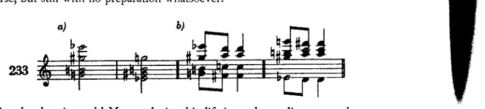
但理论家们在莫扎特生前就告诉过他，他是一个多么热衷于追逐不协和音的家伙
¹ 第一乐章，第150及152小节。参见下文，第367页。]
非和声音 325
他是怎样的，以及他何其频繁地屈服于那种去写丑陋之物的冲动，而凭他的才华，这样的写作实在并无必要。
然而，看来[作曲家]确实觉得这是必要的。他们觉得有必要去写的，恰恰是那些美学家不喜欢的东西，恰恰是这些人宣称为丑陋的东西。否则，我们就不会看到这样的事在历史上反复发生。但如果那真的是丑陋的，那么谁才是对的？美学家还是艺术家？历史对此毫无疑问：永远正确的是创造者；即使那是丑陋的。那么，它与美的联系又在哪里呢？
答案是这样找到的：美只从非创作者开始思念它的那一刻起才存在。在此之前它并不存在，因为艺术家不需要它。对他来说，完整性便已足够。对他来说，表达自己便已足够。说出必须要说的话；依据他的本性的法则。然而，天才固有的法则是未来世代的法则。平庸者抵制它们，仅仅因为这些法则是善的。在非创作者身上，对善的抵制是一种如此强烈的冲动，以至于为了掩盖自身的赤裸，它迫切地需要天才无意中提供的美。然而，美即使真的存在，也是无形的；因为它只存在于这样的所在：某个人的感知力（Anschauungskraft）仅凭自身就能创造它，而此人也确实仅凭这种力量创造了它，并且每每感知便重新创造它。有这种感知，美便存在；感知一结束，它就再次消失。其余一切都是空谈。另一种美，那种可以在严格规则和严格形式中占有的美，正是非创作者所渴求的美。对艺术家而言，它无足轻重，就像一切实现一样；对艺术家来说，渴望本身便已足够，而平庸者却想要占有美。尽管如此，美确实会不请自来地降临到艺术家身上，因为他所追求的仅仅是完整性。仅仅是完整性而已！如果你们能做到的话，就去尝试吧，你们这些非创作者！但艺术家达到了它，因为它就在他内部，他只是将其表达出来，他只是从自身中提取它。而美之所以存在于世间，仅仅凭借一样东西：凭借非天才本性中那种相投的激动，凭借那种受苦的能力，那种对伟大所经历的一切感同身受的能力。作为激起普通人的那种巨大同情力的伴随物，作为天才在洞察自然的过程中完成那些必要任务所取得成就的副产品——作为这样的东西，美完全可以存在。
因此，这些和弦实在并不美。当然不美，因为没有什么是本身美的，甚至连音也不例外。当然它也不是丑陋的。它变得美或丑，取决于谁在运用它，以及如何运用。即便如此，说这些和弦不美，也许比说其他和弦美更为正确。这些和弦不美，至少起初不美；当然它们也永远不会变美；然而，如果它们不能立即打动人，人应当先去熟悉它们。届时，它们也很可能会释放出如那些长久熟悉之物所释放的同样的美感。耳朵常常是迟钝的，但它必须自我调整。适应新事物通常并不容易；而且必须说，恰恰是那些获得了某种精致美感观念的人，正是他们，因为
326 非和声音
自以为知道他们所喜欢的东西，便最激烈地抵御新奇之物，抵御那种会被承认为美的新事物。事实上，它只会被承认为真实与真诚的，而那正是人们所谓的美。
我可能会被怀疑，认为我把美的理念等同于真实与统一性的理念。¹ 确实，如此阐释它或许是一种优势；因为我们至少可以摆脱那些纯粹形式化的探究，那些将美简化为算术问题的实验。反之，如果美是某种真实的东西，那么它只有在不能被算术问题所表示时才能令我们满足；如果所有的魔力被揭示出来，不是作为某种非常简单的东西，而是作为某种非常复杂的东西；如果它的多面性实际上源于一颗种子，这颗种子之所以爆裂，是因为它无法承受内部萌芽的力量。但是，[这种令人满足的、多面的美]并不会[产生]于一个齐整的公式，在等号左边站着一个不大可能之事，尽管它确实平衡了右边的东西，但等式成立这一事实依然无法掩盖它的不大可能。生命不是以那种方式被象征的，因为生命是：活动。然而，确实存在这样的危险，即形式主义干巴巴的热情可能会被过度感伤与道德幻想那湿漉漉的热情所取代。让那种危险出现吧！从中让那种关于事物本质的模糊性暂时出现吧，此前，形式主义曾以如此令人满意的方式赋予我们这种模糊性。我真的应该满足于变化，满足于一块颜色不同的玻璃。新事物将在此被发现，而且即使它在本质上并不比先前发现的东西更正确，它至少是新事物；而新事物，即使它不是真实，至少也是美。那些庸人的巨大焦虑——他们如果不通过套用规则就无法证实美，他们从未体验过美而只是间接地听说——我并不分担他们的焦虑。任何对人类及人类努力具有敏感性的人，无需借助美学，仅凭那些我们的本能如此准确无误地辨识的直接标志，就能认出天才；正如本能否感知谁是朋友、谁是敌人，感知哪个人投契、哪个人不投契一样。统一性或许也可以用数学术语来表达，或许甚至比美更能如此。对于后者，公式最终归于失效；美的感受必须由美感来解释。统一性是一个表示艺术家与其作品之间关系的比率。二者彼此的相对性通过这个比率来表达。由此可知，只有一种完美的统一性，即当这个分数等于一时，因而所有活动停止之时；因此，[统一性的]所有中间阶段都近在眼前。那种[不完美]与生命本身是协调一致的；因为它揭示了人所努力的目标以及评判自身努力的标准。在其中，错误也有一席之地；错误与真理一样，都是统一性的一部分。事实上，错误理应享有一席荣誉之地；因为正由于它，活动才不会停止，完美才不会达成。统一性、真诚永远不会转变为真理；因为如果我们知道了真理，那将是几乎无法承受的。
此外，美的纯粹情感源泉及其效果——
[¹ 真实，真诚。]
非和声音 327
仅受情感支配的对象，最终很可能会要求知性（Verstand）承认其法则。但这并不意味着知性应该为这些情感制定法则，并要求它们符合这些法则，正如美的法则那样。因此至少会赢得这样一种优势，即理性（Vernunft）被阻止去对那些只能靠感觉来判断的事物进行简化——那种虽然适合理性、但对情感而言却过于狭隘的简化。
等读者读完了巴赫*与莫扎特的引文促使我不得不说的话时，他就会忘记我之前已经反驳过的那种论点，即这些“不协和音”之所以出现仅仅是因为经过音。我这样预测，是因为我知道善意的读者每当打算反驳时是如何思考的，因此我请他回忆前面的段落[pp. 322-4]。巴赫的这些引文见于经文歌第4号（Peters版，第56和59页），¹配法如下：
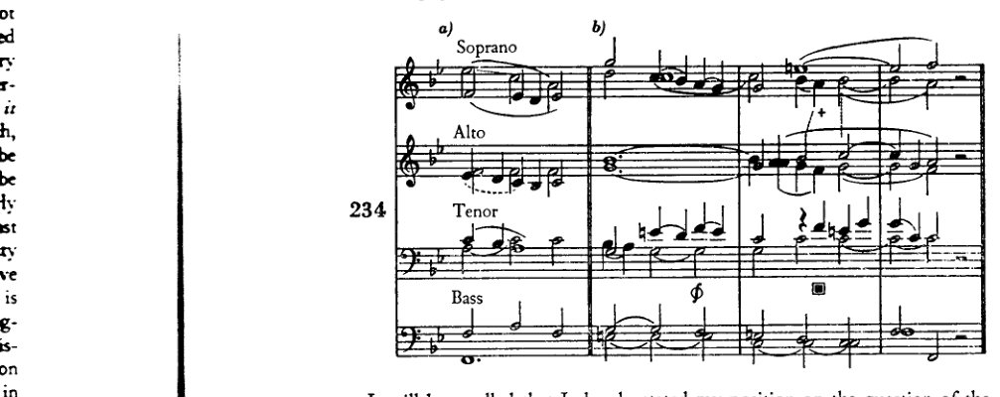
应该记得，关于经过音的速度与短暂性问题，我已经阐明过我的立场；凡是能够跟上我论证的人，都不得不承认这个想法是相对的，不能作为绝对标准。但假设它是绝对的，并且假设巴赫真的追求美，那我们又能得出什么结论呢？像在两个低音声部之间♯处那样的和声（注：此处并非快速度！！！），或者在第二女高音与第一女低音之间+处的二度进行，或者男高音在■处的自由进入（也很有意思，
* 一位赞同我的人因误解而使我注意到，这里引用的和弦可能被视为孤立的、只是偶尔出现在巴赫音乐中的例子。但事实并非如此。相反，它们是规律性地出现的。它们必然出现，这不仅因为使用更远谐音的驱动，更主要的是因为八部写作的织体，这种织体迫使人们采用这样的用法。
¹ 这些引文与第334页的引文一样，均出自经文歌第5号《来吧，耶稣，来吧》（Komm, Jesu, komm）。参见Peters 'New Urtext Edition'（1958），第14小节及第41-3小节。鉴于勋伯格在下一段中关于第一男高音在■处的评论，应当注意的是，该版本此处是一个附点二分音符g¹而非c，并且没有休止符。]
泛音——这个 un
我们可以使用它们 c
基于短暂的美学判断，因为我从不说美或丑，而是试图寻找人们或许认为不变的原因与原理，抑或人们知道其已改变、知其如何改变、知其为何改变的原因与原理；因此，未来的理论家将会发现一块相对干净的石板。他将不必去探究，例如，禁止的五度是否真有任何依据存在于
[* 勋伯格在修订版中添加了这句话以及接下来那句他无法构建任何体系的评论。他重新组织并改写了本章这一节的其余部分（至第331页）。]
328 非和声音
顺带一提，例234a)中第二女高音与第一女低音之间的隐伏八度——这些仍然是十分刺耳的音响。不应设想，像巴赫这样的大师，倘若其美感意识禁止如此，会无法避免这类和声。它们也不可能无意地、甚至因疏忽而出现；因为这不仅见于本作，而且见于巴赫的每一部其他作品。因此，毫无疑问，他必定认为它们是美的。或者至少它们并未令他感到困扰，无论他是否确实志在写出某种美的东西。那么便可以确定，刺耳的和声既然出现在巴赫的作品中，因而肯定不可能是审美缺陷，如果美本身是一种要求，那么它们实际上正是美的必要条件。并且，就算他仅仅允许将它们作为经过音来使用，因为他的耳朵尚不能容忍自由写出的这类和声——他毕竟还是写出了它们，而且这样做远不止轻咬了一口知识之树。他顺从了容纳更复杂和声的冲动，凡是他认为可以在不危及整体可理解性的情况下，他便这样做。但关键在于，写出刺耳和声的冲动——我发现这与纳入更远泛音的冲动是同一回事——这种冲动是存在的。他将它们写成经过性的现象，以便我们能够自由运用；他使用了救生圈，好让我们学会自由游泳。正如他在其前人认为必需救生圈的地方自由地游泳一样。
人们会问，为何我在本书前半部分如此详尽地解释并分析某一体系的每个细节，为何我费心剔除细小的错误，为何我给定律以不同的形式，等等，倘若我现在又拿出证明该体系不足之处的证据。
人们会问，¹ 我是否因此能够建立一个新体系，或是扩展并改进旧体系。
而现在，由于我根本不能构建任何体系——正如我一开始就声明的那样——人们就会发现其中存在不一致：先前曾对诸如四六和弦之类的问题进行过如此细致的区分，而此处却又有如此大量的和声完全未经审视、整理乃至评价，既非总体地，更不用说逐一地。
由此将得出结论：那位此前一直处于如此严格指导下的学生，在此处突然毫无准备地面对一种他无法应付的自由。
首先：至于那种不一致，本书此处或许比其他教科书中的更大；但这仅仅是因为在本书前半部分我比其他书写得更精确，而在后半部分我仍然说得同样多。我试图从心理学角度、实践角度或通过泛音来解释这些问题，至少会对未来的理论家有所助益，即使他所依据的原则与我的不同。
因为，由于我的尝试从不依赖于短暂的审美判断；由于我从不说美或丑，而是试图寻找那些可被视为不变的、或人们知道其已发生变化、以及如何变化、为何变化的原因与原理，因此，未来的理论家将会找到一块相对洁净的石板。他将不必停下来去调查，例如，禁止五度是否真的具有任何基础在
[¹ 这一句以及随后关于他无法构建任何体系的说明，是勋伯格在修订版中添加的。他重新组织并重写了本章这一节的其余部分（至 p. 331）。]
非和声音
329
性质；他会找到对六四和弦在古老作品中所扮演角色的阐明，以及其原因；还有自然所赋予者与艺术家活动所“人为”产生者之间的区分，关于旋律因素影响下和声形成的论述，以及对诸多细节的解说，都将成为他的路标。因此，我相信我的阐述并不算过于详尽。如果现在古老和声的法则（真正的法则，而非正统学说的夸张）也是未来的法则——对此我深信不疑——那么我在前半部分所说的并不算太多。然而，这种不一致性被证明更加微不足道，因为我并不像理论家们那样突兀地抛弃旧体系，他们虽然也被迫离开它，却浑然不觉。只要旧体系还能运作，他们就沿着根音的路径走，将和弦归于音级；他们在安排和弦[进行]时不考虑其起源。这一程序之所以可能，是通过判断和弦的价值及其连接能力实现的。然而，随后理论家们却突然跳到另一种表述模式，即历史的模式，在那里事件只根据其起源来安排和判断。但我已经指出，即便对于那些归于音级的和弦，其中许多也并非起源于和声，而在那些地方我转到了旋律的论证。而且，尽管从一开始我所追求的只是一种阐述体系，而非自然体系，但我仍然从对古老和声的系统审视中发现了至少一个观点，它也能使人展望未来：即不协和音是泛音列中更为遥远的协和音这一原则。单单这一原则就意味着，由非和声音产生的和声也和其他一样是和弦。这一原则足够宽泛，可以涵盖一切和声现象，无需例外。那些被视为偶然的和声也是和弦；显然它们可以作为和弦来使用，如果在这里不曾抛弃这个体系，那么这种表述方式本可以继续下去。那些理论家之所以无法做到这一点，是因为他们没有认识到这些和声是和弦。
现在，至于学生以及那种指责——说他在毫无指导和准备的情况下突然面对一种无法应对的自由——我要说的是：顺便提一下，他在前面几章中接受的严格训练本身，单凭这一事实就更可能使他在面对自由时应对自如，而非较不严密的课程所能做到的；但撇开这一点不谈，我根本无意给予学生这种自由。说到底，为了什么呢？自由不是给予的，而是夺取的。而且只有大师才能夺取它：也就是说，那个本来就已经拥有它的人。学生可能夺取的东西，即便教师不想赋予他，也不是那种自由。他在那种情况下得到的，与他来受教之前已有的东西别无二致：一种毫无根据、仍不承担责任的自由。因此，我无法给予他自由；这样一来，我要么应当自己建立一个体系来规范此类和弦的使用，要么应当禁止使用非和声音。
我既未能找到一个体系，也未能将旧体系扩展以涵盖这些现象。如果由于……的局限，这对我也许是无法做到的，
330 非和弦音
就我的才华而言，那么让我的成就体现为揭露了迄今为止所使用方法中的缺陷。然而，或许目前尚不可能建立一个体系，因为材料仍然太少，而且我们离旧体系仍然太近。如果我们不顾及少数敢于听从自己听觉的年轻作曲家的实验——如今有许多人确实有勇气，但他们拥有的不是听觉，而是对什么会立即成功的眼光：这些人我们可以放心地忽略——那么，到目前为止，这类和声几乎只被用在可以用经过音等方式来解释的地方。这也是自然的，并且与我的发现毫不矛盾。因为这些法则确实构成了音乐家本性的一部分，不仅因为他受过这些法则的训练，而且因为它们实际上指明了这些和声产生的方式。我已多次指出，大多数不协和音很可能是通过旋律处理方式进入和声的。我的论战所要引起注意的其实是另外一些东西：(1) 从今以后它们是和弦，就像所有以同样方式产生的其他不协和音一样；以及 (2) 它们只是表面被并入了旧体系，它们是根据另一种原则、根据其起源来评判的，而不是被归于根音。
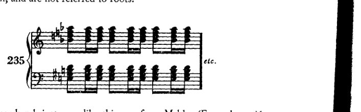
另一方面，像这个来自马勒的例子（例235）¹以及他音乐中和施特劳斯²音乐中众多其他段落都太孤立了，而且更重要的是，所有这一切离我们仍然太近。如果我们要把一个对象看作一个整体，就必须与它保持一定距离；在近处我们只看到个别特征，只有距离才能揭示一般特征。事实上，要找出从二音到十二音所有可想象的、与某一根音相关的和声，将它们相互联系起来，并用例子说明其潜在用法，这并不会太难。甚至也可以找到名称。例如，人们可以把一个带有“非和弦音”d♭的C大三和弦命名为‘小二一大三和弦’，把带有非和弦音d的命名为‘大二一大三和弦’，把带有e♭的命名为‘双三度三和弦’，把带有f的命名为‘小’，而把带有f♯的命名为‘大四三大三和弦’。人们可以把熟悉的解决规则应用于这些和弦，并把那些由非和弦音处理中产生的规则补充进去。但这一切是否会有很大价值却值得怀疑，因为如果没有对效果的描述和评价，我们就无法实际应用。然而，倘若我们要进行评价，那么我们就会再次得到一个
¹ 第六交响曲，末乐章，第387小节。 ² 参见第一版第372页：'……施特劳斯《英雄生涯》中"Widersachern"的孤立片段……'
留音、经过音等 331
一套关乎美学的体系；此外，它与旧体系不同，不能诉诸一系列令人瞩目的艺术作品来求得证实，它宁愿走在作品前面，为它们规定一条或许永远不会被采纳的道路。唯有耳朵可以占主导地位，耳朵、对音高的敏感、创作冲动、想象力，别无其他；绝不要数学、计算（Kombination）、美学。因此，既然我无法给出任何体系，并且倘若仅仅是关乎肤浅逻辑的问题，我就应当禁止使用非和声音。更何况我从一开始就说过，声部进行的问题只在为呈现和声所必需的程度上才属于和声学研究。然而，如果考虑到这两个学科——和声与对位——的互相渗透是如此彻底，正如它们的分离是不彻底的一样，因为声部进行中的每一个现象都可以成为和声，而每一个和弦也都可以成为声部进行的基础；因此，若不是因为素材过于浩繁，将两门课程融合为单一课程将是极大的优势——那么，我对待这些和弦的态度也就显而易见了。如下：
仅仅是出于教学上的考量，才使我没有让学生对这些和弦完全自由地运用：迄今为止，我已根据传统经验确切地告诉他，何时可以依赖这种或那种和声来取得效果；我愿继续如此。没有传统经验可以作为自由使用这些和弦的基础；相反，在声部进行规则中，我们有经过检验且认可的方法来控制它们。因此，我在这里将采取与例如对待禁止五度时相同的立场：精通者是自由的；但学生要受到限制，直到他自己也变得自由。因此，我将简要地以类似于通常的方式来讲述这些非和声音。只是，学生要知道——这是一个本质的区别——他面对的是和弦，是与所有其他[不协和和弦]一样不协和的和弦。而且他要知道，他得到的关于使用它们的指示，其意义并不大于那些建议他以半音方式引入游移和弦的指示；不外乎如此：最简单的方式是仿照历史演变而来的那一种，但尚未成为历史的未来将会带来不同的东西。
留音、双重留音等， 经过音、换音、 先现音
所有这些所谓的非和声音——留音、经过音、换音、先现音——在我们的练习中都应以如下方式呈现：它们通过旋律事件而显现。于是，它们的出现以及所不可避免地产生的不协和音，便由某一动机或
332 非和弦音
一种与动机相关的节奏；然而，它们也常常由某些既定的公式来证明其合理性，即常提到的装饰音（Manieren）。¹ 无论这些是否与“任何音的和声组合皆有可能”这一基本直觉相一致，我们在此再次看到，某些既定的、类似陈词滥调的形态因其令人满意的解决已被记忆所保证、被听觉所预期，从而使得在过分狭隘的规则之外实现必然性成为可能。这种陈词滥调允许这些形态被使用，因为我们已经对它习以为常；逐渐熟悉有利于更自由的运用。新的陈词滥调由此产生。因此，这种方法借助习惯，又通过习惯反过来产生新的方法。例如，其中一种装饰音如下所示：
236 [图：乐谱——高音谱号，音符为 g、a、c、f]
如果这个 g 与某个音产生冲突，那么耳朵就会期待解决，因为这是它的习惯。但声部现在从不协和音跳到 c。即便如此也是熟悉的；因为我们知道 c 随后会弹回 f，即解决音——就像在喜剧中，情境一度变得相当严峻。但人们已经在演出海报上读到了“喜剧”，并且知道情境不会变得太危险。爱情终将胜利。这种效果因此基于对相似形式的回忆。例如：某个动机在一首作品中多次出现；因此人们知道在大幅度向上跳进之后，一次向下跳进将恢复平衡。除了装饰音之外，这也适用于其他旋律现象。任何在一首作品中出现得足够多、界定明确的动机，偶尔都可以配一个不协和音，只要最后一个音明确地给出令人满意的、协和的解决。这种形式在 Mahler 和 Strauss 的对位法中经常出现。可以看出，这完全是正当的，尽管人们不必像我那样[去论证它]走得那么远；因为它与装饰音基于同样的原理。当然，这类实验的实际执行不属于和声学，而属于对位法。但我不想在未确认这一观点的情况下继续讨论；对我来说，在此指出装饰音、动机性陈词滥调与自由动机三者之间的相似性是很重要的。如果即使复杂的现象也可以用这种方式轻易解释——尽管这种解释在体系之外，因此不是音乐性的，而是心理学上的解释——那么简单的现象自然只需几句说明便可处理。我认为，只需描述它们是什么，举几个例子和几种可能性，然后学生就必须知道如何运用它们了。
延留音与经过音应当追溯到最简单的旋律形态，即音阶、音阶片段。
237 [图：乐谱——高音谱号，展示带有延留音与经过音的上行及下行音阶片段]
¹ [Cf. supra, pp. 47ff.]
延留音、经过音等 333
延留（Suspension）意味着在某一声部中延迟一个二度的进行，同时和声发生变化。如果延留要具有典型性，通常要求被延留的音构成不协和音。但这似乎并非绝对必要；因为例238中的a无疑是延留，只要即将到来的 I 确实作为目标进入，就像在终止式中一样。
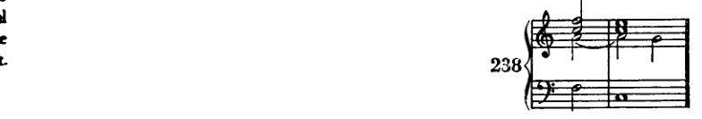
更常见的形式当然是它实际上造成不协和音；只有这时延留才足够明显。此外，[本章]确实与不协和音有关，与引入更远泛音的方法有关。延留可以有预备，也可以没有预备。学生起初应该给它预备；之后也可以无预备地引入它，作为“自由延留”。预备的进行方式与其他任何不协和音一样：即将成为不协和音的那个音，在前面的和弦中已经出现在同一个声部里。如果延留要构成不协和音，那么在它出现的和弦中，它相对于根音可以是二度、七度、九度或四度。延留的解决，作为最终要产生一个二度进行的旋律事件，可以向上或向下。
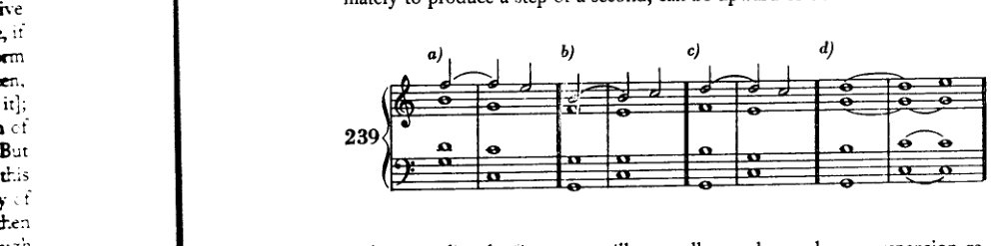
上行导音通常不会被用作向下解决的延留，而下行导音也很少被用作向上进行的延留。然而，这些解决确实会出现。

334 非和声音
有一条规定要求，延留音的解决音不得与该延留音同时出现。

然而，这种情况发生得如此频繁，以至于今天我们已无法对其提出严肃的反对意见。它不太适合密集排列的钢琴音乐。但在合唱写作中，巴赫曾无数次地使用过它（当然，在他的键盘乐写作等中亦是如此）： [例如，在此片段中]
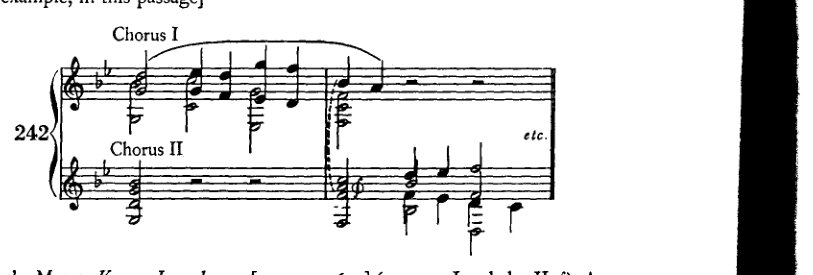
出自经文歌《来吧，耶稣，来吧》（Komm Jesu, komm）[第 6–7 小节]（女高音 I 与女低音 II，𝄞）。即使在最严格的形式下，这一规则在示例 241c，d, e. 的低音部也允许例外。
两个或更多声部也可以同时被延留。
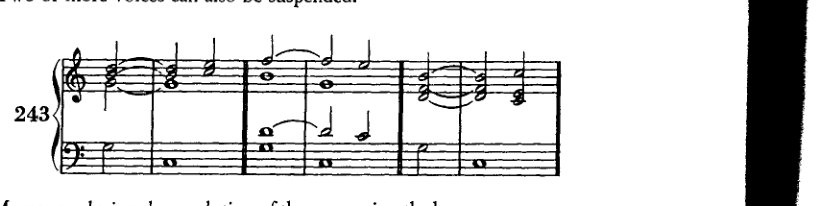
此外，在延留音解决的过程中，和声可以继续进行，以至于解决音所处的和声与此不同
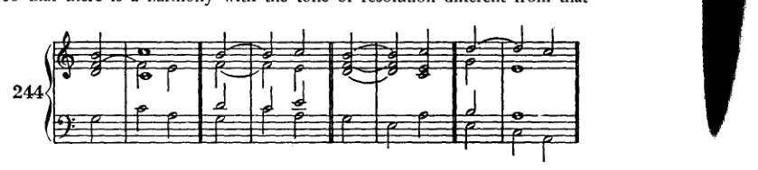
延留音、经过音等
335
伴随延留音。显然，不应仅仅因为使用了延留音而去做原本被禁止的事情；因此，不要出现平行八度或平行五度！然而，人们可以通过跳进离开延留音：即以所谓的中断解决（interrupted resolution）的形式，解决音只在一个或多个中间音之后出现。即便不了解所有常见的装饰音，也可以放心地运用自己记得的任何公式来达到这个目的。
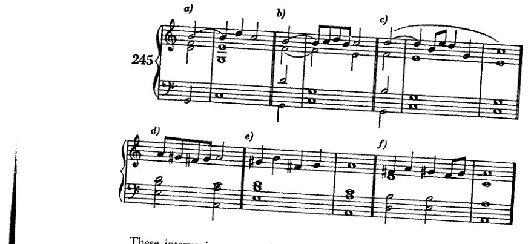
这些中间音通常会围绕解决音，在其前后环绕，旋律上保持在邻音进行，或者它们将与解决和弦构成协和音，抑或是两者的混合（例245c）。
我想提请读者注意几个非常熟悉的公式，因为它们在小调中部分地暂缓了导音规则（245d、e、f）。如所见，它们通过反向进行到第六音，中断了第七音向第八音的进行。
自由延留音非常接近一种换音音型（changing-tone figure）。对于有准备的延留音（prepared suspension），起初的规则是它应出现在小节的强拍上。作为例外（！）它也可以出现在弱拍上。然而最终，这一例外的出现几乎比规则还要频繁。显然，自由延留音也可以置于弱拍上。那时它几乎不外乎就是一种换音音型。两种情况中重要的是解决。但即便在最原始的舞曲中，我们也能找到如例246所示的实例，例如，d直接跳进至bb。
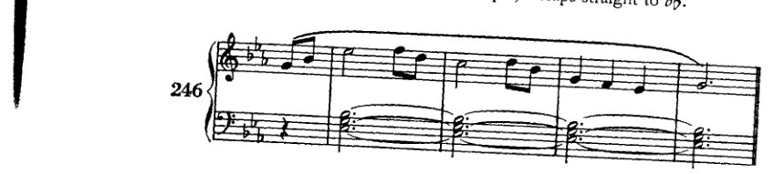
336 非和声音
d 与 bb 是围绕 c 的换音；但 c 本身也是“非和声音”。当然，人们可以自由地从延留音跳离。因此，舒曼《Ich grolle nicht》（谱例 247 +, †, ⊕）中的不协和音，要么是未解决的七和弦，要么是延留音。它们可以被解释为

两种皆可。但把它们当作七和弦来解释就足够了。学生至少应以中断解决的方式暗示其解决。
经过音我们已经屡次提及。它是一种旋律连接，其中至少三度的旋律音程由介于其间的音阶音填充；因此，四度音程中有两个经过音。

这里最重要的是，该音型的首尾音应为协和音。若经过音连接五度，则这三个音当然不可能都是不协和音。
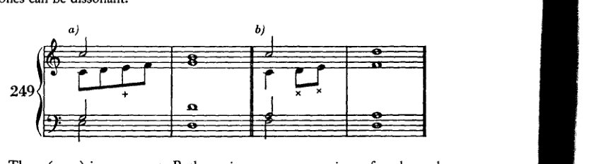
e（249a）是协和音。连接四度的两个经过音都可以是不协和音（249b）。经过音也可以同时出现在多个声部中。
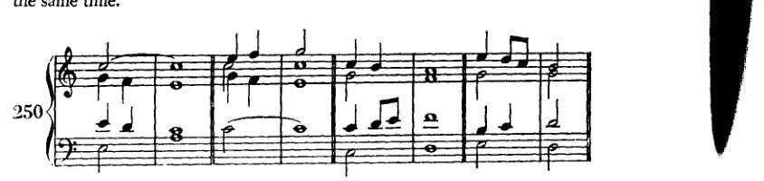
延留音、经过音等 337
由经过音造成的平行八度与五度，应当完全按以前的方式来评判。

较古老的理论认为，平行关系不会被经过音取消，也不会被延留音掩盖。这是对的；它们既不比未被掩盖的平行关系更好，也不更差。学生常常倾向于把延留音附加到经过音上。即使在严格、过于严格的写作中，这也是不允许的。但实际上没有理由反对这种组合；它事实上在大师作品中很常见。
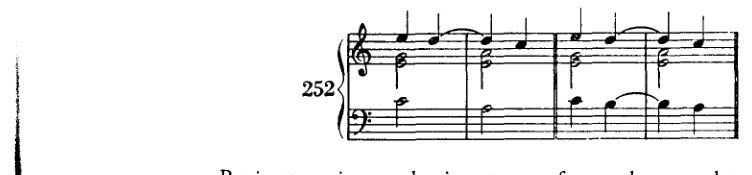
多个声部同时出现的经过音常常会产生完整的新和弦，这些和弦既可被视为独立的，也可被视为经过和弦。实际上它们是独立的；只是，经过和声理论——它总想将其临时和声强加于人——把它们解释成从属的。
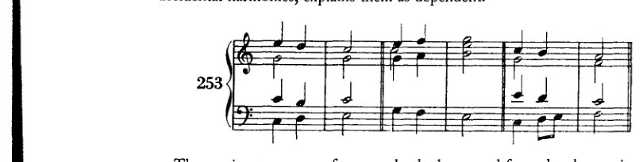
经过音当然也可以借用自半音阶。如果学生想到我们的副属和弦，并记住经过音作为一种简单旋律形式（音阶级进）的意义，这就不会带来任何困难。
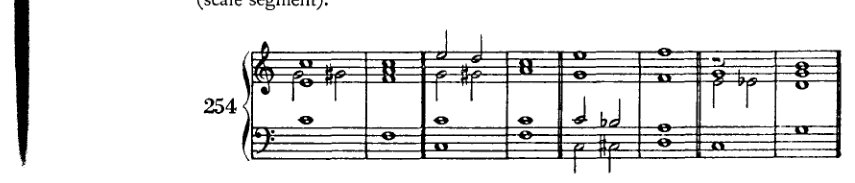
338 非和声音

经过音与游移和弦相配合时作用显著；例如，由经过音带来的重新解释，使得像例255a和b中的那两次转调能够结合在一个乐句中（255c）。
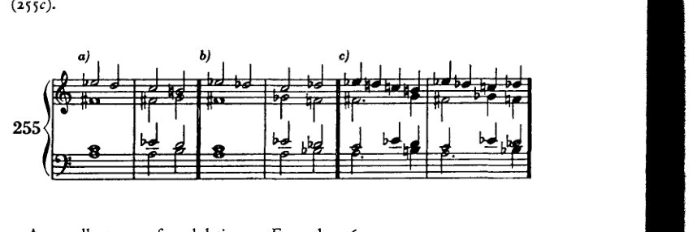
一种极佳的转调方式；或者例256a。

不用游移和弦也同样奏效（256b）；这里，e♭的半音引入以及经过性的b♭和a♭极大地便利了从大调到小调的过渡。
以下这种经过性和声也经常出现。
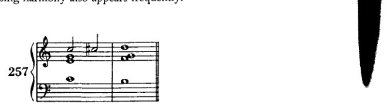
留音、经过音，等等。
339
乃至以下这些：

显然，学生越贴近原型，即音阶（尤其是半音阶），他能写出的组合就越大胆。
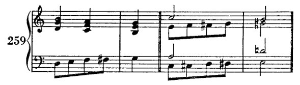
每当涉及变和弦或游离和弦时，效果实际上往往相当温和。游离和弦经常可以通过经过音进行到未变化的和弦，反之亦然，由未变化的和弦到游离和弦，这是一种对转调以及丰富终止式都很有用的技术。

在此，以及在许多其他例子中，我们看到经过音如何能够构成和弦，构成那些为人熟知、已成定式的和弦。由此可见，那种将偶然出现的和声结构视为非和弦的分类是多么不合理。它只不过是将无法纳入其体系的和弦拒不承认为和弦，并以此将无奈之举粉饰为一种优点。我们再次确认这一论断的正确性，只需记住那些已被纳入体系的和弦，恰恰也是源于同样的旋律需求。那只不过是出于无奈。因此，这种优点也就相应地微不足道了。
要列出所有可能出现的情况自然是不可能的。正如我前面所说，学生最好先写出经过音的原型，即按音阶级进的旋律片段。当然，也包括半音阶级进的片段。有一种练习，正如几乎所有教科书中所给出的那样，我不得不予以否定：在这种练习中，要求学生为已经用二分音符或全音符勾勒出的乐句添加装饰性的留音和经过音。这种作业是荒谬的，
340 非和声音
inartistic to the highest degree. 这种用装饰音来点缀的做法，正如阿道夫·卢斯所言，是一种“纹身”式的幼稚行为。如果学生在已完成的作品中偶尔进行修改，而其中已经存在经过音与留音——这些是他在将旋律作为和声来构思的同时自然想到的——我并无异议。例如，他可以用一个经过音来改善听来生硬的连接，或用一个留音来修饰摇摆不定的节奏。这类修改几乎无可指摘。但学生必须努力追求的是在构思其余和声的同时，发明出这些非和声音的能力。这根本不像看起来那么难；作为附带、独立的练习，[非和声音的写作]是完全多余的。只要经过音或换音还不能自发地涌现，学生就不应过度使用它们。当然，常用练习所能达到的教学目的不应被舍弃：它借此迫使学生始终将基本和声铭记于心，不至于在非和声音中忽略它们。然而，我还是无法让自己布置这种练习；因为对于在此阶段已经必须具备相当和声技巧的学生来说，它过于机械。即使解答成功，实际的收获也微不足道；但更令人不安的是这种做法背后潜藏的欺骗：一个平庸的想法被不适于其本质的装饰所肤浅地填充。我宁愿建议学生多在钢琴上或稿纸上实验，寻找音型与连接，然后在一首小曲中发展他所发现的东西。发展、加工——这比装饰是更好的练习，因为它能培养正确引入素材并正确延续它的能力。
换音（Wechselnote）最好被解释为一种记谱的装饰音（Manier），或一个动机。通常，至少在其最简单的形式中，它属于一个由一或多个非和声音组成、并环绕某个协和音的音型。
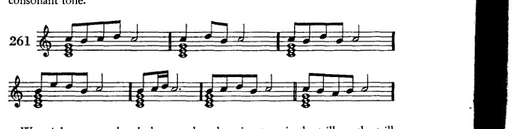
我们可以说，在颤音或带回音的颤音中，我们早已有了这样的换音。将其写出后如下所示：

延留音、经过音等 341
在传统装饰音中——此处引用的例子取自海因里希·申克（Heinrich Schenker）的著作《Ein Beitrag zur Ornamentik》¹——学习者将会发现许多此类标准公式的范本，当慢速演奏时，它们无疑是经过音，即便在快速演奏时人们可能不会如此认定。当然，在几乎所有的装饰音中，一个音都为其邻音所环绕。然而，经过音未必如此，正如中断的延留音所示，它产生于延留音与经过音的融合。经过音的常见形式包括以下几种：

当然，半音变化也可参与构成经过音；起初或许应当谨慎使用。

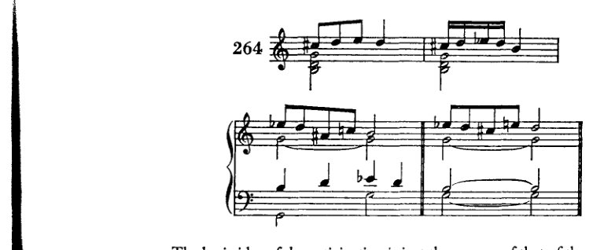
先现音的基本概念恰好与延留音相反。后者是在和声变换时延迟一个或多个声部，而前者则正好相反：可以说，这些声部提前到达了。

在265的a和b中，a展示延留音，b展示先现音，二者均记谱为
[^1]: (neue revidierte und vermehrte Auflage；维也纳：Universal-Edition，无日期 [1954?]），第34、38、45及54页。申克的《Contribution to the Study of Ornamentation》初版于1908年。]
342 非和声音
并置以作比较。先现音，如同延留音一样，可以出现在单个声部或多个声部中。关于这个话题无需再多说。
一旦学生按照先前推荐的方式熟悉了非和声音，他在运用它们所提供的可能性时就不应有长久的困难；而且他也不需要我所禁止的那种练习：他不需要通过在骨架上到处挂破布来制造血肉之躯的假象。相反，通过遵循推荐的方法，他将获得一种能力，即像对待自己的和声（Harmonien）一样，以同样的远见来引入那些音响（Zusammenklänge），也就是由‘非和声音’所创造的那些音响。因此，它们将不再是偶然，而开始成为[显现为]法则——只不过，是他无法用言语表达的法则。任何仔细查看巴赫众赞歌的人都应当清楚，一位真正的大师从未做过如此缺乏艺术性的事，即便以后来要完善的和声草稿为借口也不例外。我在这里[完整]给出先前从《马太受难曲》中引用的那一首：¹
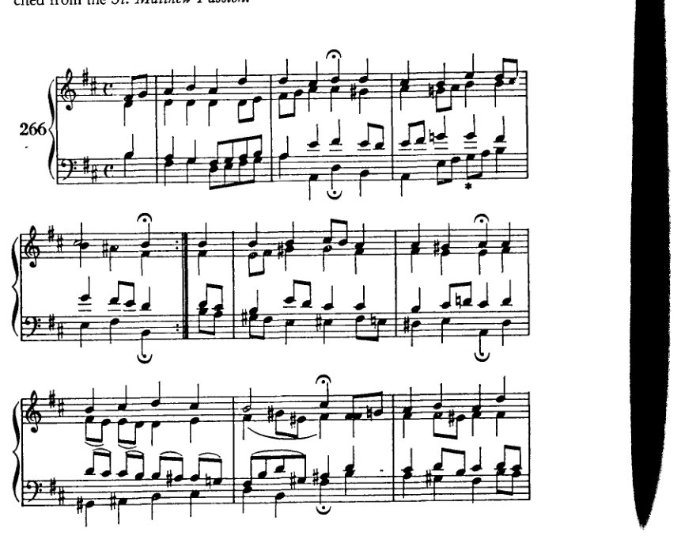
¹ [见前，Example 229d, p. 301。]
Suspensions, Passing Tones, etc. 343
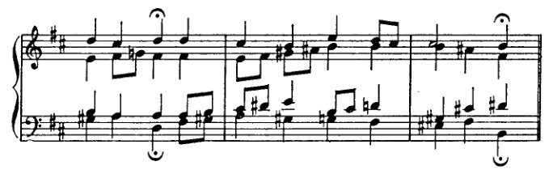
我想，第一眼就应看出，巴赫并非仅仅是在原本贫乏或乏味的和声上悬挂些装饰音，好让它生辉。不妨把每一个单独的声部抽出来，单独审视。你会发现它们简直就是旋律，往往与众赞歌旋律本身一样优美。这与那种外在的[修饰]目的截然不同！然后，试着去掉那些或可被视为偶然变化音的东西。通常来说，这几乎是不可能的；或者结果至少会笨拙到——虽说它可能出自某位装饰音爱好者之手——却绝非巴赫的手笔。或许[这种删去“装饰音”的做法]并非总是完全不可能；因为，即便人们视为装饰的东西是与所有其他部分一同构思的，剩下的部分依然足够出色。当然，人失去了小脚趾也还能活下去；可那就不再是一只构造完好的脚了。
[试看]，例如，在第一个乐句中，低音、男高音与女低音声部中的经过音。显然，它们构成了和弦；因为它们的和声目的是为一段出现三次的旋律（注意反复记号和倒数第二个乐句）配和声，其方式如下：这些和声——原本很可能因和弦变换不足而显得贫乏——以有力的笔触勾勒出了调性的主要特征（I、IV、V），同时又不过于丰满，以致后来的重复不能再更加丰饶并出人意料。因此，下属区域的音级被安置在弱拍上，因而约束力较弱；但它们的速度更快，并且出现两次，从而补偿了它们相对的薄弱。于是，不平衡的力量通过被施加于杠杆的两条不等臂之上而保持了均衡。
再[看]第二个乐句，主调是如何被迟疑地引入的。甚至就在临近最后一刻的刹那（），低音中的a还在暗示大调即将来临。原因很清楚：这支众赞歌在D大调与b小调之间摇摆，正如终止式所表明的那样；一开始就过于明确地落在b小调上，恐怕未必有利。决断随后才作出。因此，这个a*的作用是拖延！可见，它绝非装饰音！！
第三乐句：那些最初以模仿旋律前四个音符的方式出现的八分音符，在这里变成了一个独立的小动机，支配着整个中部织体的音型发展。因此，这个动机绝不仅仅是装饰音；它毋宁说是一个结构成分，即便其重要性是次要的。
在接下来的乐句中，音乐变得如此丰富，我宁愿不去尝试描述或解释所发生的事情。这里已无法简短言之。在一部真正的艺术作品中，和弦彼此之间的关系是如此确定、如此妥帖